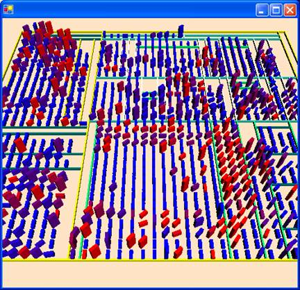
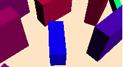
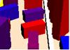
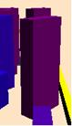
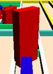
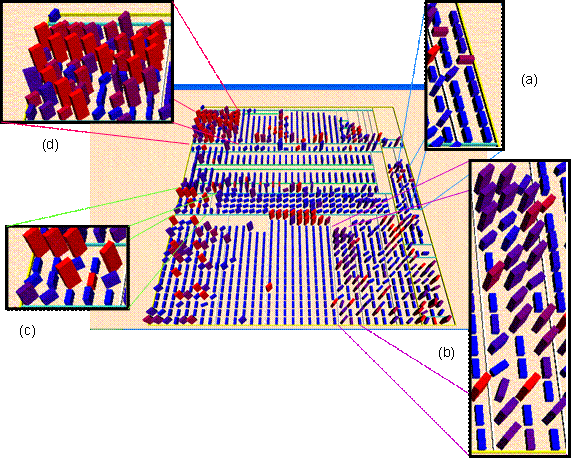
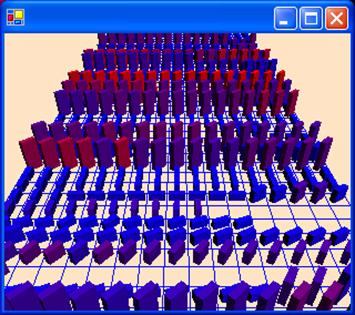
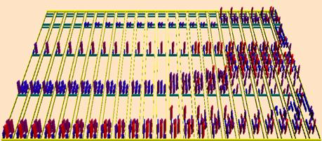

|
Visualisation et analyse de logiciels de grande taille Guillaume Langelier, Houari A. Sahraoui, Pierre Poulin Actes de la conférence Langages et Modèles à Objets (LMO2005) Matériel supplémentaire et figures en couleur |

Figure 2. Un exemple dans notre système d’une représentation par packages.
(a)  (b)  (c)  (d) 
Figure 3. Les différents types de classes/constructions

Figure 4. Les différents types de packages/quartiers.

Figure 5. Exemples d’évolution des classes (les lignes représentent les classes et les colonnes les versions).

Figure 6. Exemple d’évolution d’une partie d’un logiciel
(les différentes versions sont juxtaposées horizontalement et séparées par une colonne vide).